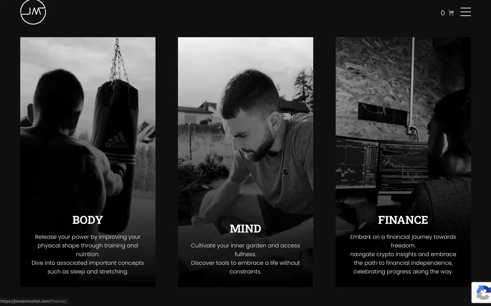
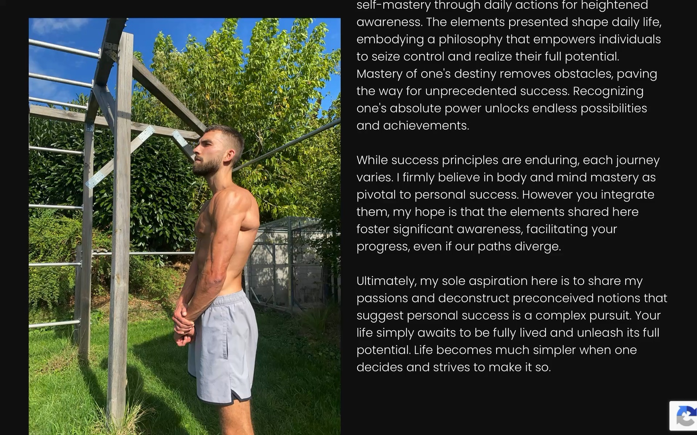
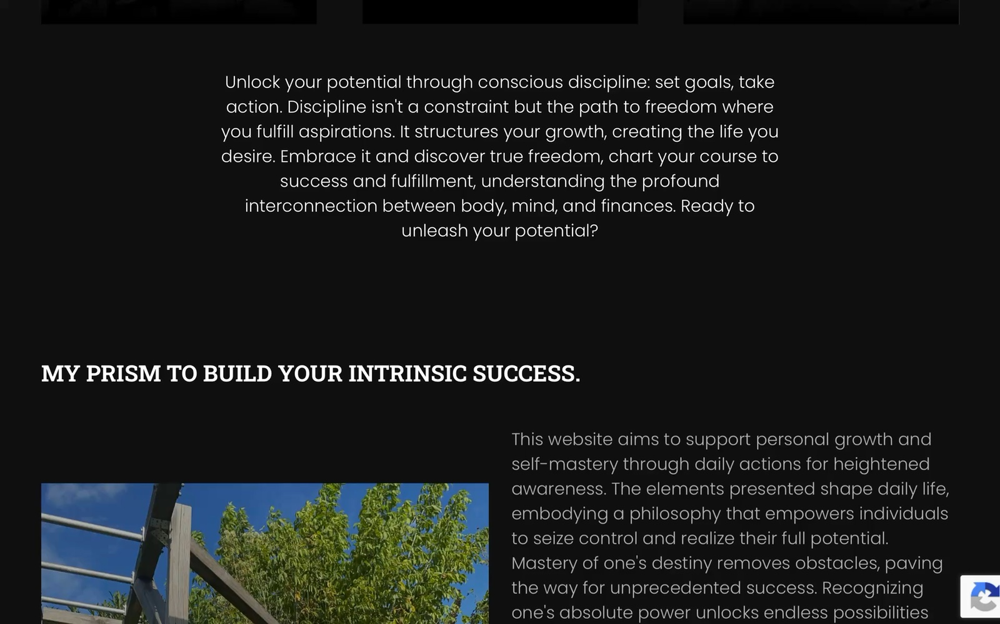
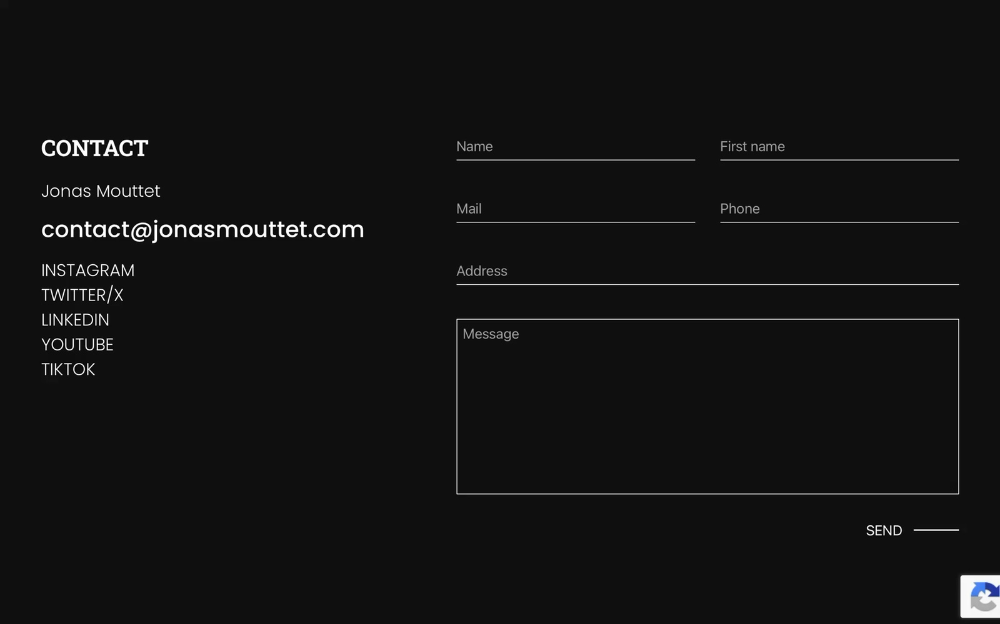

Jonas's content (training, nutrition, mindset and crypto/investing) was scattered across Instagram, TikTok, YouTube and X, with no owned home and no way to sell anything directly. We ran the positioning research, built the identity, and designed and developed the full site: three pieces of one engagement, covered below.
Personal Brand & Digital Design
Jonas Mouttet
Brand identity and a WordPress/WooCommerce content platform, built to unify years of personal-development content (training, nutrition, mindset and crypto) under one owned identity.
01
Market study.
Most solo creators route an audience through a link-in-bio tool or a templated course platform. Neither can carry a real identity, or take a payment natively.
Linktree-style link pages and templated platforms like Kajabi, Teachable or Stan Store solve distribution, not ownership: the content, the pricing and the email list all live on someone else's infrastructure, styled in someone else's UI. For a personal brand spanning three distinct domains (training, mindset, and crypto/investing), that meant no single page could ever read as one coherent point of view, only a list of outbound links.
The alternative was a fully owned platform: one domain, one identity, three content pillars, and a real store (WooCommerce rather than an embedded checkout widget), so a visitor arriving from any one platform lands on the same coherent brand, not a generic bio page.
The default
Link-in-bio tools and templated course platforms solve distribution, not identity. Every creator's page ends up looking like every other creator's page.
The fragmentation
Training, mindset and crypto content published across five separate platforms, with no single place that reads as one coherent point of view.
The positioning
One owned domain, three content pillars, a real store, resolved into one line: "Unlock your potential through conscious discipline."
02
Branding & identity.
Black, white and desaturated documentary photography: a register closer to a personal manifesto than a lifestyle brand.
The JM monogram, a single continuous line closed into a circle, anchors a system built almost entirely in black and white: a black background, white type, and desaturated portraits for the three pillar cards. Color is reserved for real, unstaged lifestyle photography elsewhere on the site, and for a small functional accent system rather than decoration.
COLOR PALETTE
Base Black
#000000
Base White
#FFFFFF
Signal Blue
#004CF0
Signal Red
#F00020
Signal Yellow
#F0D800
Signal Green
#08F000
Black and white carry the entire page. The four signal colors are a reusable accent system rather than a decoration: any content block (a pricing plan, a pull-quote, the newsletter form) can take one on as a thin top/bottom border, so new content stays on-brand without custom styling.
TYPOGRAPHY
Body. Mind. Finance.
Unlock your potential.
MARK
A single continuous line, closed into a circle around the initials, simple enough to work alone as a favicon and a social avatar across five different platforms.
PHOTOGRAPHY DIRECTION

The three pillar cards, always in black and white: a boxing bag, a quiet morning of reading, a trading desk, documentary rather than styled on purpose.

Color returns only here: a real, unstaged photo beside the first-person philosophy text, marking the one section of the site that speaks in Jonas's own voice rather than the brand's.
03
Website creation.
Design, structure, implementation and features: a content-and-commerce platform built on WordPress and WooCommerce rather than hand-rolled from scratch.
DESIGN
The homepage opens directly on the three pillar cards, with no hero statement above them: the three domains of the brand are the hero. Everything below sits on the same black field: a philosophy statement, a "My prism to build your intrinsic success" section pairing headline and body copy, then a first-person about passage next to real, unstaged photography. Generous vertical whitespace and a slab-serif/sans pairing do the work that color or imagery would do on a typical lifestyle site.

The philosophy statement and mission section: full black field, no imagery competing with the type.
STRUCTURE
One shared header and footer carry the whole site: Home (the three pillar cards, philosophy, about), Body (Workout, Nutrition), Mind (The 4 Principles, 9 Mindset Amplifiers), Finance (Crypto & Blockchain), About me, Articles, a Shop for the digital guides, and Contact. Every pillar follows the same landing-page-then-subpages pattern, so the three domains stay symmetrical even though their content differs.
IMPLEMENTATION
-
✓
WordPress, on a purpose-built theme
A custom theme rather than a marketplace template, so Jonas can publish articles and edit pages himself without touching code. A hand-rolled static site can't offer a solo creator that trade-off.
-
✓
WooCommerce, with real payment rails
Stripe and PayPal checkout, plus a product-bundle plugin for the multi-guide bundle: a real store, not an embedded Gumroad or Stan Store widget.
-
✓
Contact Form 7, with conditional fields
Fields adapt to what the visitor is contacting about, with reCAPTCHA on submission. No third-party form embed breaks the page's own black-on-white styling.
-
✓
AOS scroll reveals, Swiper carousels
Lightweight, well-established libraries handle the scroll-in reveals and article carousels, chosen over a bespoke animation system a solo creator would have no reason to maintain.
FEATURES
The shop carries three real digital products: Exclusive Crypto & Investment Bundle ($69.95), Blockchain Explained (reduced from $79.99 to $39.99), and The all in one crypto & investment guide (reduced from $59.99 to $29.99), each running through WooCommerce's own cart and checkout, not a link to an external store. A direct-contact form sits alongside real social links (Instagram, Twitter/X, LinkedIn, YouTube, TikTok), so every channel Jonas already posts to funnels back to the one owned site.
